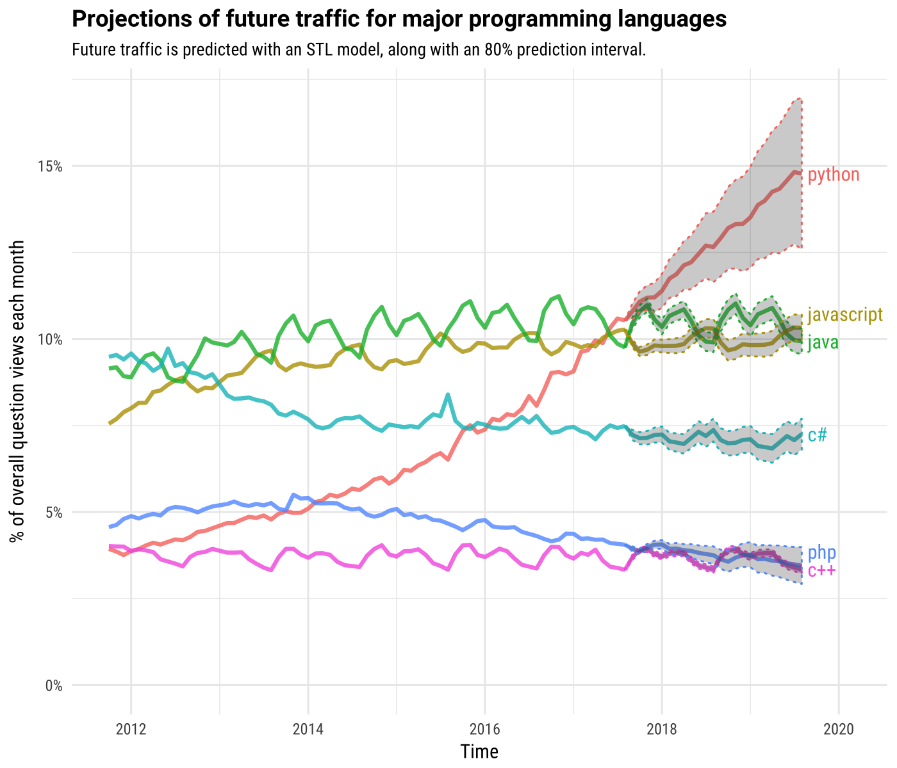
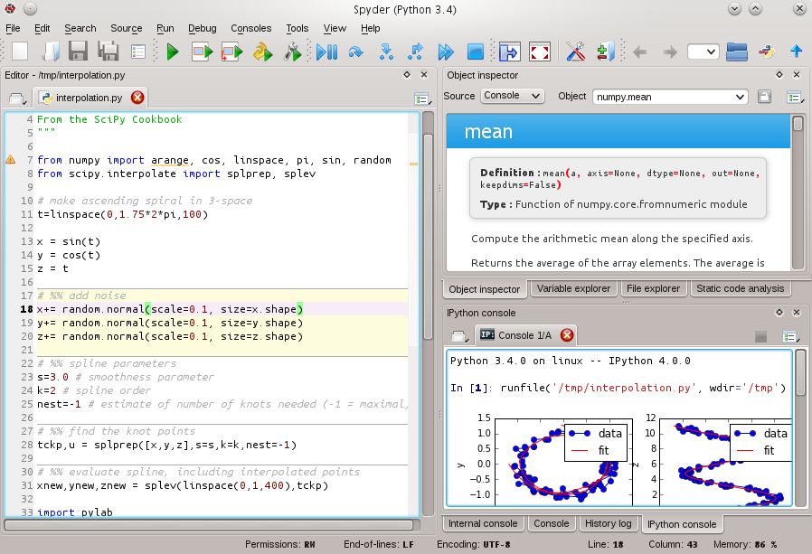
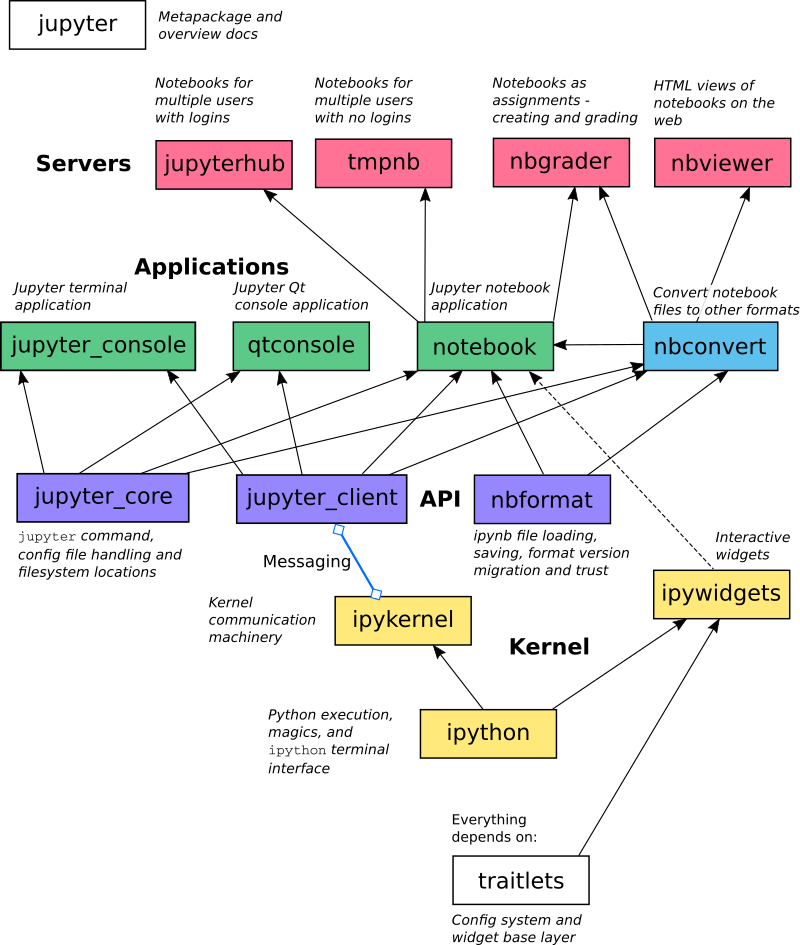

class: inverse, center, middle background-image: url(figs/realpython-filter.jpg) background-size: cover # Get started with scientific Python ### Potsdam (February 7-9, 2018) Beno√Æt Bovy - GFZ, section 5.5 --- ## Small survey First, let's have a look at the [results](https://goo.gl/forms/ml9DTZLQaYyNgl4U2) of the survey... --- ## The Scientific Python learning curve -- The Python language is easy to learn. -- But the Python scientific "ecosystem" is very large and rich. -- This is challenging for newcomers. -- <br><br> The Python scientific ecosystem provides many high-level, easy-to-use tools. -- But harnessing the potential of these powerful tools often requires good understanding of some abstract concepts. -- This may be also challenging for new users. --- ## Goals of this short course -- Introduce a few "pythonic" concepts and idioms. -- Give a broad (though rather shallow) overview of the scientific ecosystem. -- Give some tricks, advices and good practices to efficiently write efficient code. -- <br> <br> .highlight[Hopefully, you will get answers to these questions] -- - Where to start? -- - Where can I find the right tool(s) for my problem? -- - Where can I look for further help and information? -- - Isn't Python too slow? --- ## Outline - Topics -- .highlight[*Session 1: introduction to Python*] - Generalities, history... - Basic syntax and data structures - A brief tour of the CPython standard library -- .highlight[*Session 2: the Python scientific ecosystem*] - General overview - Introduction to core libraries (e.g., Numpy, Matplotlib, Scipy, Pandas) - How to profile / accelerate / parallelize numerical code in Python? - A brief tour of the modern scientific/data stack -- .highlight[*Session 3: mini-projects*] --- ## Outline - Topics .highlight[*Session 4: writing scripts with a command-line interface*] -- .highlight[*Session 5: some elements of advanced programming in Python*] - Classes, decorators, etc. -- .highlight[*Session 6: Maintain, share and publish your code*] - Good practices of programming and software development --- class: inverse, center, middle # A brief presentation of --- ## The origin of Python .col-left40[ <figure> <img src="figs/Guido_van_Rossum.jpg" width="95%"> <figcaption>source: wikipedia</figcaption> </figure> ] .col-right60[ Python is not new at all, it was created more than 25 years ago by Guido van Rossum. Python (CPython) is a community-based, open-source project managed by the Python Software Foundation. ] --- ## The language vs. its implementation The name "Python" refers to the language, which is independent from its implementation (software). -- Python is actually implemented in different languages. name | language ----------- | -------- CPython | C Jython | Java IronPython | C# PyPy | just-in-time compilation -- CPython is the reference and most used implementation. -- The Python scientific libraries are built almost exclusively on top of CPython. -- Therefore, hereafter we use "Python" to refer to both the language and the CPython implementation. --- ## The rise of Python Python has slowly gained popularity over the years with a recent high increase, especially [within the scientific community](https://stackoverflow.blog/2017/09/14/python-growing-quickly/). <figure>  <figcaption>source: <a href="https://stackoverflow.blog/2017/09/06/incredible-growth-python/">stackoverflow</a></figcaption> </figure> --- ## Why is Python popular? Scientific work involves a whole range of different computational tasks. <br> <figure> </figure> --- ## Why is Python popular? Python is a general purpose language. <br> <figure> <figcaption>source: kinherd.org (Sebastian Heimann)</figcaption> </figure> --- ## Why is Python popular? <figure> </figure> This doesn't happen with Python. --- ## Why is Python popular? Clean syntax, readable code - **Accessible to non computer scientists** -- High level, interpreted language - **Faster development (less to maintain, no compilation)** -- Platform independent code, batteries included, easily extensible, robust core scientific librairies + great number of librairies around - **Reuse instead of reinvent** -- Multi-paradigm (imperative, object-oriented, functional) - **Suited for writing small scripts as well as large applications** --- class: center, middle background-image: url(figs/blue-sky-sun.jpg) background-size: cover --- class: center, middle background-image: url(figs/clouds.jpg) background-size: cover --- ## Python weaknesses -- .highlight[Python is slow ] - Workaround: call compiled code from within Python - This does not always matter! "Premature optimization is the root of all evil" -- .highlight[Python 2 vs. Python 3] - No forward nor backward compatibility - Python 3 has been released a while ago, but then has been slowly adopted - Unless you have no choice, [use Python 3!](http://www.python3statement.org/) -- .highlight[The ecosystem is rapidly and constantly evolving] - Continuous maintenance work --- class: inverse, center, middle # How to install Python? --- ## How to install Python? Python is already installed on many platforms (linux distros, macos...) üòÄ -- But we'll also need to install Python scientific libraries üòÆ - Possibly including non-Python dependencies - May not be compatible with the system version -- There are many ways to install Python (CPython) + libraries ü§î - Plateform-specific package managers (apt, homebrew) - Cross-platform package managers (conda, pip) - Python distributions (Enthought, PythonXY) - Compiling the sources (...really?) -- My advice üòâ - use conda! - (and pip when a package cannot be installed using conda) --- ## Conda .highlight[How to install conda?] - Download and install [Anaconda](https://www.anaconda.com/download/) (Full distribution) - Or download and install [Miniconda](https://conda.io/miniconda.html) (Minimal installation) -- .highlight[What are the advantages of using conda?] - Cross-platform - A lot of packages available for scientific development - Not only for Python - Isolated envrionments! - Different versions of Python/libraries may coexist on the same system - Works with [pip](https://pip.pypa.io/en/stable/#) -- .highlight[Useful ressources]: - [Conda documentation](https://conda.io/docs/) (including tutorials) - For geeks: read [this blog post](http://jakevdp.github.io/blog/2016/08/25/conda-myths-and-misconceptions/) --- class: inverse, center, middle # How to execute Python code? --- ## How to execute Python code? - Python interactive console .terminal[ ``` $ python Python 3.5.2 |Continuum Analytics, Inc.| (default, Jul 2 2016, 17:52:12) [GCC 4.2.1 Compatible Apple LLVM 4.2 (clang-425.0.28)] on darwin Type "help", "copyright", "credits" or "license" for more information. >>> ``` ] -- - Execute Python scripts (files with *.py* extension) .terminal[ ``` $ python myscript.py ``` ] --- ## How to execute Python code? - [Spyder](http://pythonhosted.org/spyder/) (similar to Matlab)  --- ## How to execute Python code? - [Jupyter](http://jupyter.org/) Notebook <img src="figs/jupyterpreview.png" width="85%"> --- ## How Jupyter works? .col-left40[ It decouple the interface and the code exectution Code can be executed remotely! Initially for Python (IPython), but language agnostic (R, Julia, Octave... even C++ or Fortran) ] .col-right60[ <figure> <figcaption>source: <a href="http://2016-oslo-repeatability.readthedocs.io">Oslo repeatability</a></figcaption> </figure> ] --- ## The Jupyter project: beyond the notebook <figure>  <figcaption>source: Jupyter documentation</figcaption> </figure>